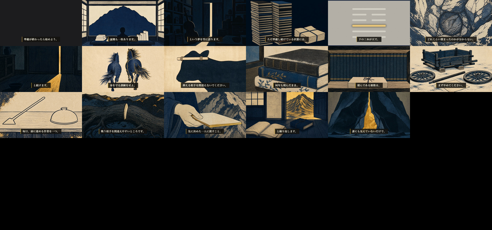

第49話 ／ content/069 ／ 通し視聴ゲート（final-video）
完成しました。通しで観て、出すか止めるか決めてください。
耳をすませば（月島雫）× 大畜。8分17秒・29シーン。公開枠は 2026-08-18 04:00 JST。ここが最後の停止点で、この先は公開作業だけです（公開ボタンは私は押しません）。
- 機械ゲートは全部PASS。シーン境界28箇所すべてで黒落ちなし（ep1-38で全話起きていた事故）。
- 独立採点：企画93 → 台本96 → 画像93。識別監査も全28カット「不明」でPASS。
- 台本承認のあとに、読み方の修正を2箇所入れました（下に明記）。話す内容・字幕は1文字も変えていません。
1. 本編（プレビュー・480p）
これは軽量プレビューです。原盤は releases/069/essay-069.mp4（1080p・602MB）。
2. 観るときに見てほしいところ
- 冒頭30秒：机の三冊・ブックマーク四十件・一月のメモ。「これ自分のことだ」になっているか。
- 0〜8秒の上部オーバーレイ：「耳をすませば 月島雫／易経・大畜（たいちく）」が出ているか。
- 幕3の物証：「蓄えよ」と言った同じ場所に「家で食べないのが吉である」と書いてある、が伝わるか。
- 金の出どころ：幕1〜2は藍と墨だけで、金は幕3の山の断面で初めて出ます。蓄えが見えていない状態を色でもやっています。
- 幕6の棘：「守っているのは可能性ではなく、まだ採点されていないという状態のほう」。

30秒おきに抜いた画面。字幕・絵・六爻図の出方が一目で分かります。
3. 機械ゲートの結果
| 尺 | 496.7秒（8分17秒） |
|---|
| 音のピーク | -3.9dB（クリップなし） |
|---|
| 幕間BGM | -33.2dB（うっすら聞こえる×邪魔しない） |
|---|
| シーン境界の黒落ち | 28境界すべて なし |
|---|
| 字幕 | 全29シーン 本文と全文一致・語中で切れていない |
|---|
| 発音 | 誤読0（WARN1件＝「いう」の口語縮約のみ） |
|---|
| 識別監査 | 28カット全部「作品・キャラとも不明」／顔・文字・意匠・写実 すべて false |
|---|
台本承認のあとに直した2箇所を報告します。
音声合成の発音ゲートが「には」の助詞を拾ったため、V_01_02 と V_03_01 の読み仮名（tts_text）を「には」→「にわ」に直しました。読み上げる本文＝字幕の文字は1文字も変えていません（承認時のバックアップとの機械差分で確認済み・差分はこの2件だけ）。
ハーネスは承認時のハッシュと一致しなくなると台本承認を無効化するので、現在のファイルで独立採点を取り直し（96点）、承認を再束縛しました。あなたの判断の対象（内容）は変わっていませんが、黙って付け替えたくないので書いています。
4. 制作中に見つけて直したもの
| 見つかったもの | どうしたか |
|---|
| 六爻の読み上げが「陽、陽、陽、陰、陰、陽」→「ヒヒヒカゲカゲヒ」になっていた | 読み辞書に登録して再合成。卦の説明が音として崩れる寸前でした |
| 馬の目鼻が描かれていた（顔は描かない規則違反） | 構図を「真後ろから」に変更。走り去る後ろ姿なら顔は原理的に写りません |
| 本の背表紙に擬似文字（題箋・タイトルに見える線） | 拡大して確認 → 事実だったので背表紙を完全な無地にして描き直し |
| 幕1〜2で金を使いすぎ | 藍・墨・生成りへ。金は幕3の種明かしで初出に |
| 「車軸を外す」の絵なのに荷車に車輪が付いていた | 車輪と車軸を地面に外した絵へ描き直し |
| 西司朗の「原石」の台詞を使いたかったが、一次情報で裏が取れなかった | 使っていません（記憶を出典にしない規則）。処方箋は大畜の爻辞だけで立っています |
5. 決めてください
A — 出す。タイトル確定・サムネ・公開キットへ進む
B — 直すところがある（何分何秒の何が気になったか言ってください。その箇所だけ直して再レンダします）
C — 冒頭が刺さっていない。幕1を書き直して作り直す
D — 出さない（理由をください。却下台帳に記録します）
Aの場合、次はタイトル3案（痛み先頭型・あなたが1つ選ぶ）とサムネを出します。公開の予約まで私がやり、公開ボタンはあなたが押します。